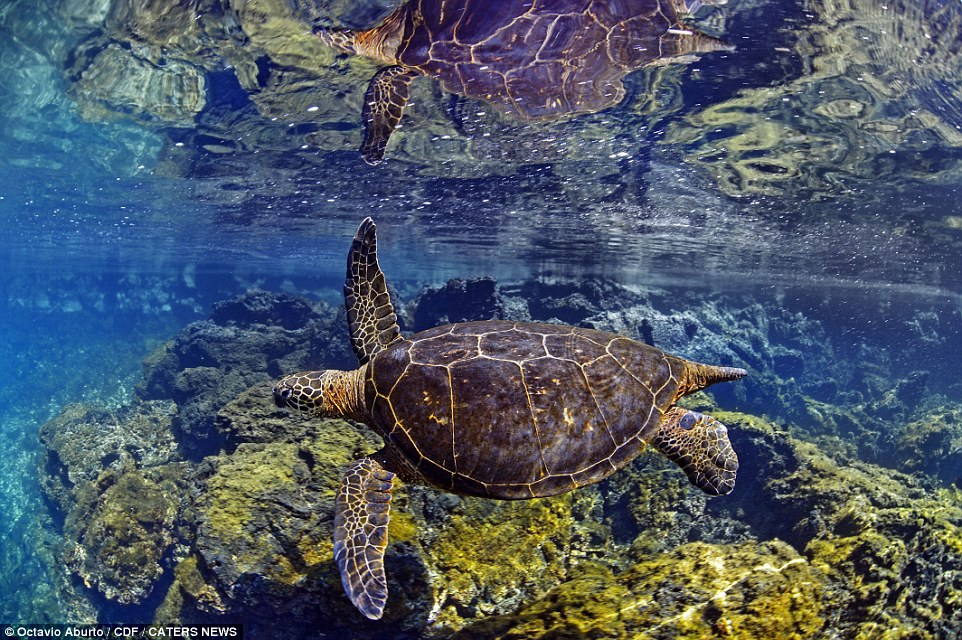

Five female security staff at Kandahar airport have been killed by unknown gunmen, local officials say.
They were travelling to work at the airport on Saturday morning when two attackers riding a motorcycle opened fire on their minivan, said Samim Akhalwak, a spokesperson for the Kandahar governor.
The five women were killed, as well as their driver.
The women were in charge of searching female travellers at the airport.
The UK fishing industry will need continued access to EU markets if it is to thrive after Brexit, a House of Lords report has warned.
It also warns that Britain may have to allow EU-registered boats to fish in UK waters as part of an overall deal.
Fishing regions around the UK voted heavily in favour of leaving the EU during the referendum campaign.
The Lords review says these communities are at risk of being marginalised in the wider Brexit negotiations.
Amid protests and threats of lawsuits, North Carolina's Republican-controlled legislature took extraordinary steps on Friday to reduce the power of the new Democratic governor.
Democrat Roy Cooper last month defeated incumbent governor Republican Pat McCrory by just over 10,000 votes.
At a special session, Republicans voted for reforms to limit Mr Cooper.
At least 16 people were arrested after protesters gathered at the legislature, chanting "shame" and refusing to leave.At a special session, Republicans voted for reforms to limit Mr Cooper.
At least 16 people were arrested after protesters gathered at the legislature, chanting "shame" and refusing to leave.At a special session, Republicans voted for reforms to limit Mr Cooper.
At least 16 people were arrested after protesters gathered at the legislature, chanting "shame" and refusing to leave.
Nine people have died in Vancouver in the past 24 hours from an overdose of the painkiller fentanyl opioid, officials say.
Mayor Gregor Robertson said it was "desperate times" for the Canadian city, adding that more deaths were expected.
"It's hard to see any silver lining right now when we haven't hit rock bottom," Mr Robertson said.
Drug abuse in Canada claimed the lives of 2,000 people in 2015.
"It's hard to see any silver lining right now when we haven't hit rock bottom," Mr Robertson said.
Drug abuse in Canada claimed the lives of 2,000 people in 2015.
Mayor Gregor Robertson said it was "desperate times" for the Canadian city, adding that more deaths were expected.
Military officials from China and the US are in talks over the return of an underwater drone seized by the Chinese in international waters, China says.
The Chinese navy seized the US research vessel in the South China Sea on Thursday.
The incident - among the most serious between the two powers in years - took place just as oceanographic ship the USNS Bowditch was about to retrieve it.
The device was being used to carry out scientific tests, US officials say.
China confirmed the talks in a brief statement on Saturday.
David Hockney's home city of Bradford is to honour the artist by opening a permanent gallery dedicated to his work to mark his 80th birthday.
The David Hockney Gallery will be housed in the city's Cartwright Hall.
"I used to love going to Cartwright Hall as a kid," Hockney said in a statement. "It was the only place in Bradford I could see real paintings."
The new gallery will show works ranging from early sketches to well-known paintings and his iPad drawings.
It will open on 7 July - two days before his 80th birthday.David Hockney's home city of Bradford is to honour the artist by opening a permanent gallery dedicated to his work to mark his 80th birthday.
The David Hockney Gallery will be housed in the city's Cartwright Hall.
"I used to love going to Cartwright Hall as a kid," Hockney said in a statement. "It was the only place in Bradford I could see real paintings."
The new gallery will show works ranging from early sketches to well-known paintings and his iPad drawings.
It will open on 7 July - two days before his 80th birthday.David Hockney's home city of Bradford is to honour the artist by opening a permanent gallery dedicated to his work to mark his 80th birthday.
The David Hockney Gallery will be housed in the city's Cartwright Hall.
"I used to love going to Cartwright Hall as a kid," Hockney said in a statement. "It was the only place in Bradford I could see real paintings."
The new gallery will show works ranging from early sketches to well-known paintings and his iPad drawings.
It will open on 7 July - two days before his 80th birthday.


